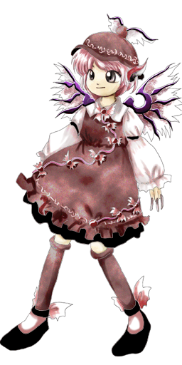

Mystia é frequentemente vista como:
Confiante e expressiva – adora cantar e mostrar seu talento musical para quem quiser ouvir.
Traquina – gosta de pregar peças em humanos, especialmente à noite, usando suas habilidades.
Trabalhadora – dedica-se muito ao seu negócio próprio, mostrando um lado bem focado.
Ela transmite a sensação de uma jovem artista e empreendedora que tenta equilibrar sua natureza youkai com sua rotina noturna.
🧠 Inteligência e astúcia
Mystia não é uma mentora genial, mas é esperta à sua maneira:
Sabe como atrair clientes e gerenciar sua barraca
Usa sua música para confundir viajantes perdidos
Às vezes age por puro instinto youkai
Apesar de sua simplicidade, ela é bastante focada nos seus objetivos diários.
🎭 Comportamento artístico e orgulhoso
Ela demonstra traços típicos de uma cantora orgulhosa:
Gosta de cantar a qualquer hora
Fica irritada ou ofendida se ignoram sua música
Pode ser um pouco provocadora com quem invade seu território
Seu amor pela música e pela culinária define quem ela é.
🌿 Vida na natureza
Mystia vive e atua principalmente na Estrada do Dragão de Janta (ou Caminho da Fera):
Passa muito tempo ao ar livre durante a noite
Interage com humanos e outros youkais na estrada
Cria um ambiente acolhedor (ou misterioso) ao redor de sua barraca
Ela prefere a calada da noite, onde suas canções ecoam melhor e seus poderes são mais eficazes.
🤝 Relação com os outros
Mystia interage com várias criaturas de Gensokyo:
Serve comida e bebida para humanos e youkais famintos
Pode cantar duetos ou formar bandas com outras criaturas da noite (como Kyouko)
Às vezes atrai a atenção indesejada de youkais famintos (como Yuyuko)
Apesar de pregar peças, ela costuma ser amigável com seus clientes frequentes.
Dona de barraca de comida (Izakaya)
Mystia administra uma pequena barraca móvel de comida noturna, famosa por servir lampreia grelhada e saquê para viajantes e youkais.
Cantora da noite
Mesmo quando está trabalhando, Mystia constantemente canta para atrair clientes ou simplesmente para expressar sua arte.
Manipulação da música (Canto)
O principal poder de Mystia envolve sua voz e suas canções:
Pode encantar e atrair as pessoas através do som
Cria melodias que mexem com o estado emocional de quem ouve
Consegue induzir confusão mental em viajantes desavisados
Esse poder é especialmente forte no silêncio da noite.
Indução de cegueira noturna
Ela pode cantar uma melodia especial que rouba a visão noturna dos humanos, deixando-os completamente perdidos na escuridão.
Voo
Como uma youkai pássaro (gorrion), Mystia possui asas e pode voar com grande agilidade, movendo-se rapidamente pela noite.
Culinária youkai
Ela tem uma habilidade natural para cozinhar pratos rápidos e saborosos, sendo capaz de manter um negócio de sucesso em Gensokyo.
Mesmo não sendo uma das youkais mais perigosas de Gensokyo, seu canto hipnotizante e sua cegueira noturna fazem dela uma oponente muito traiçoeira na escuridão.

Espécie:Yokai
Título:Pardal da Noite (Night Sparrow)